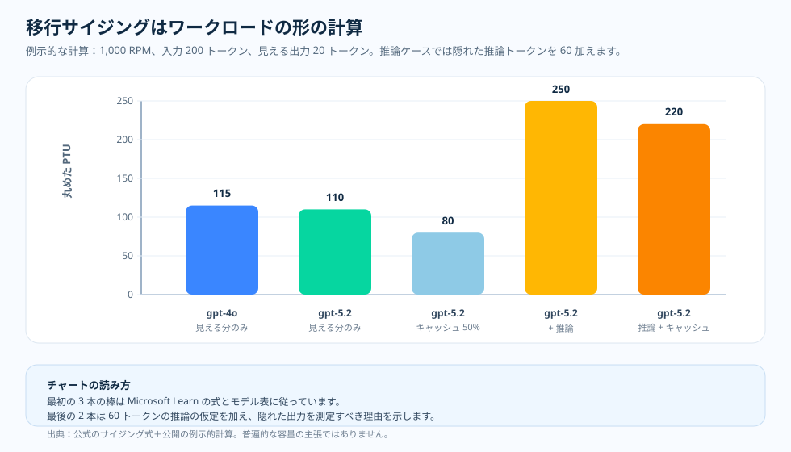

運用エッセイ · GPT-4o から GPT-5.x へのサイジング
推論モデルへの移行を、モデル名だけでサイジングしてはいけない
あるチームが gpt-4o のトラフィックを GPT-5.x の推論モデルへ
移そうとし、新しいデプロイのための PTU 数を必要とする。反射的に、
すでにうまくいっているものを再利用したくなる。古い gpt-4o の
PTU サイズをそのまま持ち越すか、それにファミリーレベルの「5.x」の乗数を当てるか。
モデル名だけでサイジングに必要な情報が十分に分かる、という仮定です。しかし PTU の
サイジングを駆動するのはモデル名ではなくトークンの形です——プロンプトの
サイズ、可視出力、隠れた推論トークン、キャッシュヒット率、応答上限がすべて
結果を左右する。そのため、名前だけでサイジングしたくなる直感は、本記事が問う運用上の
問いに真正面からぶつかる。モデル名で十分なのか、それともまずリクエストの
形を測り直す必要があるのでしょうか。
max_output_tokens）を
文書化されたプラットフォームの挙動ではなく、検証すべきアドミッション
リスクの仮説として扱い、それがワークロードが確保する PTU を支配しうるかを
確かめます。1枚要約はその一点を伝え、境界を率直に示します。これは
固定した価格スナップショットを用いた、モデル化されたワークロードによる仮想的な
計算例であり、測定された容量ではありません。
移行サイジングの1枚要約 SVG を開く。

なぜ古いサイズを再利用せず、測り直すのか
再利用の反射は、モデル名だけでサイズが分かると仮定する。うまくいっている
gpt-4o の数値を、ファミリーの乗数でスケールすれば、GPT-5.x にも
なお収まる、と。それを受け入れる前に、二つの点を確認する必要があります。
一つ目はドキュメントに明記された仕様です。Microsoft Learn は、ピーク RPM、
平均プロンプトと出力トークン、キャッシュ率、モデルの出力対入力比、そして PTU
あたり Input TPM から、トラフィックを正規化 TPM に変換し、キャッシュ済み
プロンプトトークンを利用率から差し引きます。OpenAI は推論トークンを、
output_tokens_details.reasoning_tokens に報告される、表示されない
出力側のトークンとして文書化しています。二つ目は本リポジトリの例示的な計算で、
その文書化された式を一つの呼び出し例に当てはめ、サイズを動かす要因を
並べて見せる。どのデプロイの測定でもない。
立ち止まる価値があるのは、この二つを並べて見る点です。可視出力だけで読むと、移行は
扱いやすく見える。同じプロンプトと同じ可視の答えは、新しいモデルでおおむね
同じ水準か、わずかに軽くサイジングされることさえあります。しかし可視の答えは
リクエストのすべてではありません。隠れた推論出力が現れると、同じ答えがはるかに
多くの正規化 TPM を必要としうるのです。そして本リポジトリの作業仮説——文書化
されたプラットフォームの挙動ではなく、検証すべきアドミッションリスク——は、
過大な max_output_tokens の上限が、それらのトークンが実際に生成
されるかどうかにかかわらず、アドミッションの重みを予約しうる、というものです。
だから運用上の問いは「新しいモデルは重いか」ではなく、「測定したリクエストの
形——可視出力、推論出力、キャッシュ率、応答上限——は実際に何を予約するのか」
です。正規化 TPM の式、モデル別の表、キャッシュの差し引き、推論トークンの会計は
Microsoft Learn と OpenAI が文書化しているものです。過大な
max_output_tokens を検証すべき PTU のアドミッションリスクとして
扱うのは、本リポジトリが採っている運用上の推論です。続くチャートは、固定した
価格スナップショットを用いた、モデル化されたワークロード上の仮想的な計算例
です。測定された容量でも、稼働中の PTU スループットでも、SLA でもありません。
下の例示チャートがサイズを動かす要因を明示します。
問い
GPT-4o のワークロードを PTU 上の GPT-5.x 向けにサイジングする前に、何を再測定すべきか？
根拠
Microsoft Learn は正規化 TPM の計算式を示し、OpenAI は推論トークンの会計方法を文書化しています。
判断
「5.x」というファミリーレベルの前提ではなく、実測したトークンの形からサイジングします。
公式の挙動 · 正規化 TPM
サイジング計算式が見るのはトークンの形です
Microsoft Learn は、トラフィックを正規化 TPM に変換することで PTU 需要を サイジングします。入力となるのは、ピーク RPM、平均プロンプトトークン、 平均生成出力トークン、キャッシュ率、モデルの出力対入力比、そして モデルの PTU あたり Input TPM 値です。
計算式:
normalized_tpm = rpm × (prompt_tokens × (1 - cache_rate) + output_ratio × output_tokens)
raw_ptu = normalized_tpm ÷ input_tpm_per_ptu
この計算式があるからこそ、ファミリーレベルの近道は誤解を招きます。あるモデルは 出力比がより重くても、前のモデルより高い PTU あたり Input TPM を持つことが あり得ます。答えは、あなたのワークロードの実際のプロンプト・出力・キャッシュ プロファイルに依存します。
運用の視点 · 移行で何が変わるか
移行が適合するかを決めるのは 4 つの要因
1. 出力の重み付け
GPT-4.1 以降について、Microsoft Learn は出力トークンが使用率においてモデル固有の入力トークン重みを持つと述べています。
2. 隠れた推論
OpenAI は推論トークンを、表示されない出力側のトークンとして文書化しています。output_tokens_details.reasoning_tokens から測定する。
3. キャッシュ率
Microsoft Learn は、キャッシュされたプロンプトトークンが PTU 使用率から差し引かれると述べています。したがってプレフィックスの形の変化はサイジング結果を動かし得ます。
4. 応答上限
max_output_tokens を記録してください。本リポジトリは、過大な上限を、推測する値ではなく、検証すべき PTU アドミッションリスクの仮説として扱います。
例示的な計算 · 同一の可視ワークロード
隠れた出力で答えが変わる

| 行 | モデル | キャッシュ率 | 生成出力の仮定 | 丸めた PTU |
|---|---|---|---|---|
| 可視ベースライン | gpt-4o | 0% | 20 出力トークン | 115 |
| 可視移行 | gpt-5.2 | 0% | 20 出力トークン | 110 |
| 可視移行 + キャッシュ | gpt-5.2 | 50% | 20 出力トークン | 80 |
| 推論移行 | gpt-5.2 | 0% | 20 可視 + 60 推論トークン | 250 |
| 推論移行 + キャッシュ | gpt-5.2 | 50% | 20 可視 + 60 推論トークン | 220 |
これが意味すること
可視のみの行は、GPT-5.x が常に GPT-4o より効率が低いという一律の主張を 裏付けません。推論の行が罠を示しています。隠れた推論出力が現れると、 キャッシュと応答ポリシーを測定して調整しない限り、同じ可視の答えが はるかに多くの正規化 TPM を必要とし得ます。
運用者チェックリスト · 容量を確保する前に再測定する
移行を、名称変更ではなく測定として実行する
- タスク構成を固定してください。 プロンプト・ツール・スキーマ・検索の配置・サンプル分布を、各モデル設定間でバイト単位で安定させてください。
- 可視出力を測定する。 移行前後で可視出力トークンの平均と p95 を比較してください。
- 推論出力を測定する。
reasoning_tokensを取得する。最終的な答えのテキストから推測しないでください。 - キャッシュ率を測定する。 特に ReAct やツールスキーマの変更後は、キャッシュキーのバケットごとに
cached_tokens / prompt_tokensを記録してください。 - 上限を適正化してください。 代表的な「可視 + 推論」のパーセンタイルから
max_output_tokensを設定し、まれな長文の答えにはコールごとのオーバーライドを用いてください。 - そのうえで初めて PTU をサイジングしてください。 現行のモデル表と実測したワークロードの形を用いて、正規化 TPM 計算式を適用してください。
出典と根拠の境界
Tier 1 — サービス契約（Microsoft Learn と OpenAI）。 正規化 TPM のサイジング式、モデル別の PTU あたり Input TPM と出力対入力比、GPT-4.1 以降の出力トークンの重み付け、利用率からの 100% キャッシュ差し引き、そして 推論トークンの会計が、ここに文書化されています。
- [1] Determine PTU sizing for a workload — 正規化 TPM の計算 （Input TPM = ピーク RPM × プロンプトサイズ、Output TPM = ピーク RPM × 応答サイズ、Normalized TPM = input TPM × (1 − キャッシュ率) + 出力対入力比 × output TPM、PTU = normalized TPM ÷ PTU あたり Input TPM）、モデル別の PTU あたり Input TPM と出力対入力比の値、そしてキャッシュ済みトークンが利用率の 計算から 100% 差し引かれることを定義しています。出典：Microsoft Learn ドキュメント（2026-06-05 アクセス）· アーカイブ。
- [2] What is provisioned throughput for Foundry Models? — PTU の 利用率モデルと、リクエストの形が予約済み容量をどう消費するかを文書化して います。出典：Microsoft Learn ドキュメント（2026-06-04 アクセス）· アーカイブ。
- [3] Prompt caching with Azure OpenAI — キャッシュ済みプロンプト トークンが利用率から差し引かれるため、プレフィックスの形の変化がサイジング 結果を動かすことを文書化しています。出典：Microsoft Learn ドキュメント（2026-06-04 アクセス）· アーカイブ。
- [4] OpenAI reasoning models guide — 推論トークンを、
output_tokens_details.reasoning_tokensに報告される、表示されない 出力側のトークンとして文書化しています。出典：OpenAI ドキュメント（2026-06-04 アクセス）· アーカイブ。
Tier 2 — 運用上の推論（本リポジトリ）。 過大な
max_output_tokens を PTU のアドミッションリスクの仮説として扱う
こと、そして推論トークンとキャッシュ済みトークンの測定契約は、本リポジトリの
運用上の推論であり Learn の仕様ではありません。
- [5] 本リポジトリ、
docs/13-ptu-vs-payg-decision-runbook.md—mean_max_output_tokensを記録し、大きなmax_output_tokensを、推測する値ではなく、検証すべき予約済み アドミッションの重みとして解釈します。出典。 - [6] 本リポジトリ、
docs/14-observability-schema.md—reasoning_tokens、cached_tokens、max_output_tokens_sentをそれぞれの元の usage フィールドに 対応づける、PTU レコードの正準的な契約。出典。
このトピックが示すこと、示さないこと。 アクセス日時点で Microsoft Learn が明記する PTU サイジングの契約——正規化 TPM の式、モデル別の PTU あたり Input TPM と出力対入力比、GPT-4.1 以降の出力トークンの重み付け、 100% のキャッシュ差し引き——と、OpenAI の推論トークンの会計、そして本リポジトリの 経験則——サイジングの前に出力・推論・キャッシュ・上限を測り直す——を文書化します。 例示チャートは文書化された式を一つの呼び出しの形の例に適用したものです。これは 計算例であり容量の保証ではなく、特定の GPT-5.x のワークロードがすべての リージョン・モデルバージョン・トラフィック形状にわたって従来の GPT-4o より重いか 軽いかを証明するものではありません。
実務上のルール
実務上のルール：GPT-4o のトラフィックを PTU 上の GPT-5.x へ移す前に、
出力・推論・キャッシュ・max_output_tokens の上限ポリシーを測り直し、
そのうえで正規化 TPM の式でサイジングしてください。モデル名だけでは、ワークロードを
サイジングするのに十分な情報ではないためです。
本記事で運用エッセイはいったん完結します。ここからは、そもそもどの根拠が公開に足るほど強かったのかを判断した方法論へ戻ります。